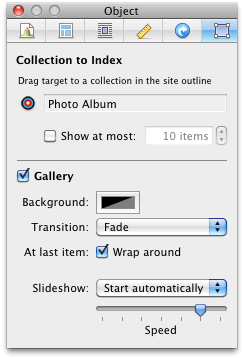

Photo Grid

A photo grid object is a great way to show off the most recent additions to your photo album on another page in your site.
To add a photo grid
- Choose the page that you would like to add the photo grid to in the site outline.
- Add the Object by choosing "Objects" from the toolbar, then "Indexes", the "Photo Grid".
- Open the Object Inspector, choose the newly added photo grid if it is not already selected.
- Drag the little target to the photo album that you would like to use in the site outline.
You can limit the number of images show by checking the "show at most" box and choosing the number that you want shown.
Gallery
The gallery option will create a slideshow of your images.
You can choose the background colors and the transition.
Check the 'Wrap around' box to have the images continually play.
You can choose to have the slideshow start automatically or start manually.
And with the speed slider you can choose the speed that the images are shown.